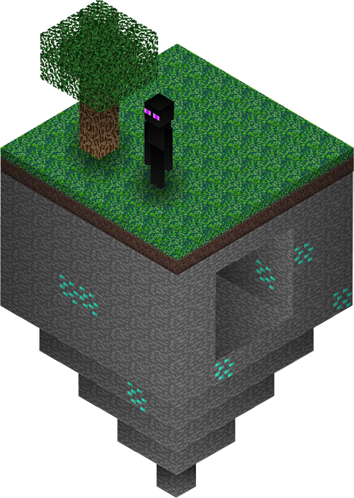
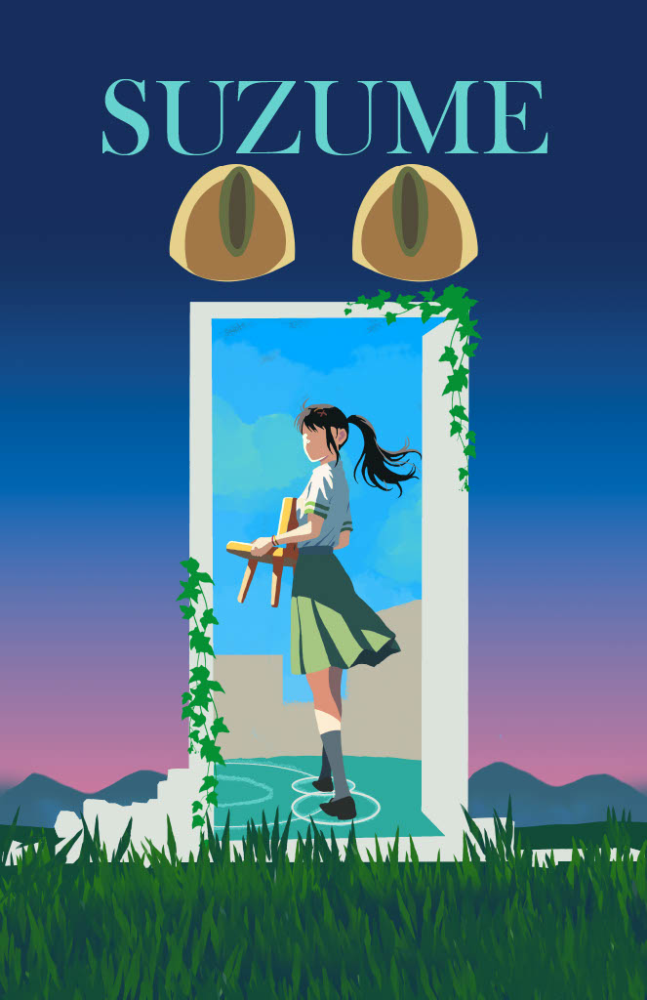
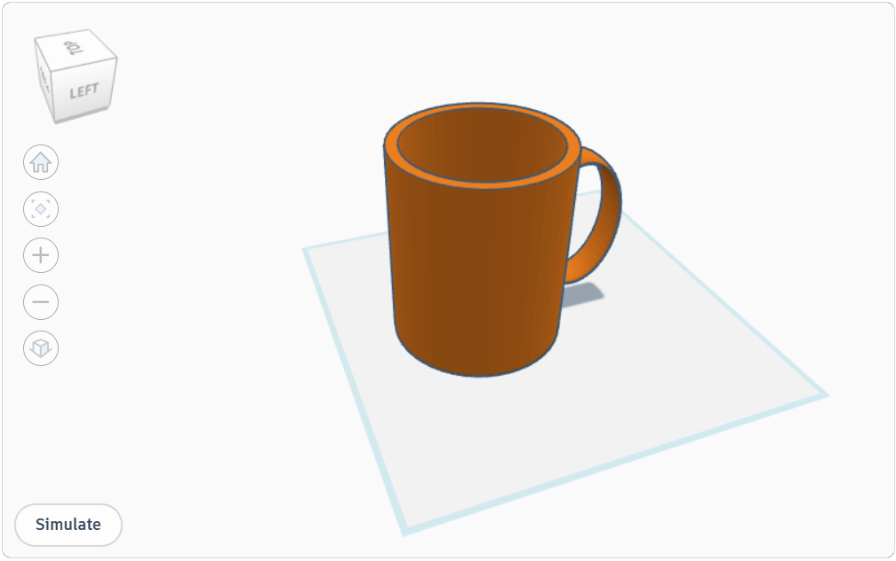
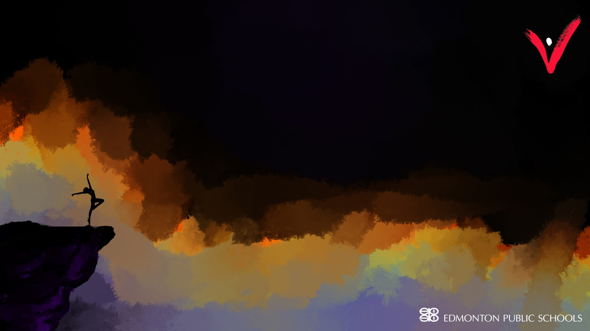

This project, created in Adobe Illustrator, is a detailed, from-scratch illustration of a floating island inspired by the world of Minecraft. The island features grassy terrain, a tree, and an Enderman standing at the edge—evoking the iconic look of the game. Below the surface, the stone-textured underside includes a cave and scattered diamond ores, adding depth and visual interest. With stylized shadows and faithful recreation of Minecraft’s textures, the artwork combines creativity with technical Illustrator skills to bring a blocky fantasy world to life.
Wow!
Recent Artworks


Through the Door: A Minimalist Tribute to Suzume
Created using Adobe Photoshop and primarily the brush tool, this project reimagines the poster of the anime film Suzume with a minimalist aesthetic. Stripping the design down to its essential elements, the piece captures the emotional tone and mysterious beauty of the film through simplified forms, clean composition, and thoughtful use of negative space. The brushwork adds a soft, hand-crafted feel that contrasts the simplicity of the layout, creating a unique balance between subtlety and depth. This redesign highlights how minimalism can still carry powerful storytelling and atmosphere.

Brew in 3D: Precision Coffee Mug Design
This project, created in Tinkercad, features a realistic 3D model of a coffee mug, built with exact real-life dimensions. The design emphasizes precision and scale, reflecting careful attention to proportion, structure, and usability. Though simple in form, the mug serves as a demonstration of how digital modeling tools can replicate everyday objects with technical accuracy. This piece showcases foundational 3D design skills while blending functionality with aesthetic minimalism.

Edge of Expression: Dance in Color and Shadow
Created as a custom computer screensaver, this digital artwork uses a combination of Illustrator and Photoshop to convey a powerful sense of freedom and contrast. The composition features a dark, minimalist sky above vibrant waves of colorful splashes, evoking movement and energy. At the edge of these flowing colors stands a silhouette of a cliff—designed in Photoshop—supporting a poised dancer, also silhouetted, captured mid-pose as a symbol of liberation and expression. While Illustrator’s pen tool was used to trace and define key shapes, the full composition was brought to life through detailed work in Photoshop. This piece merges technical skill with emotional storytelling, creating a visually compelling and symbolic digital artwork.

Mythborn: The Hybrid of Land, Sky, and Sea
This surreal digital collage brings to life an original mythical creature, combining the body of a seal, chest of a hummingbird, face of a cat, and wings of an owl. Constructed from real photographic elements, the creature was seamlessly blended using Photoshop tools such as smudge, masking with brush techniques, and precise object selection. Each part was carefully integrated to form a cohesive, lifelike hybrid that feels both fantastical and believable. The project showcases advanced digital manipulation skills and creative imagination, merging elements from different realms of nature into a captivating mythical beast.
Artwork Title
Clash Loop: The Eternal Showdown
This short animation features two stick figures preparing for combat before launching into a high-energy sequence of synchronized punches and kicks. The impact sends both characters flying back to their starting positions, seamlessly resetting the loop. Designed to repeat infinitely, the animation captures a humorous yet intense face-off, showcasing principles of timing, motion, and rhythm. Created using Adobe Animation, it highlights clean transitions, effective anticipation, and satisfying visual loops — making it ideal for use as a looping GIF or screensaver.
Dual Justice: Logo for Players De Novo
This logo was designed for Players De Novo, a charity that hosts theatrical performances featuring lawyers to raise funds for meaningful causes. The design blends legal symbolism with theatrical flair. At its center is a woman resembling Lady Justice, blindfolded to represent impartiality. Behind her head rests a classic theatrical mask — the mask of tyranny — evoking the drama and duality of performance. The logo creatively captures the intersection of law and art, portraying two faces of justice and expression. The name Players De Novo is placed below the emblem in a balanced, professional typeface, tying together the organization’s mission with a bold, memorable visual identity.